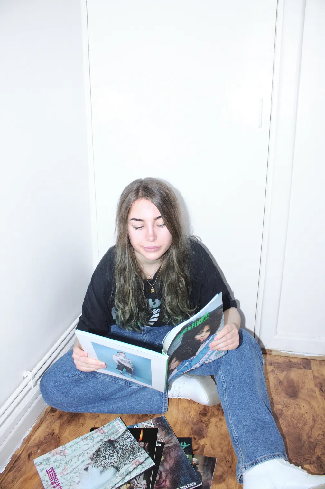
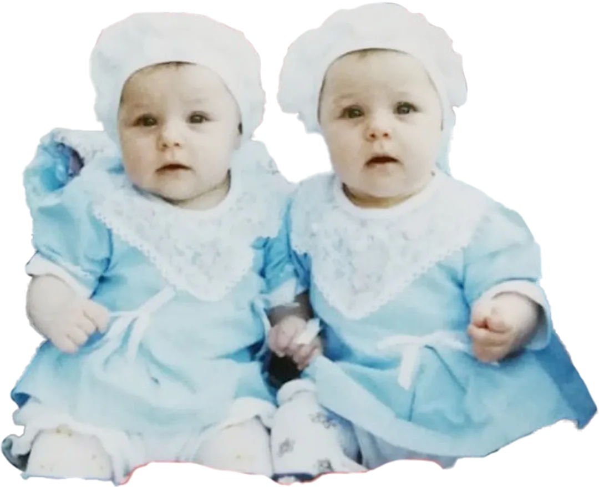

We like good stories, reading between the lines, and pushing past the mainstream.
You like delightful surprises, dreaming big, and finding the deeper meaning in small details.
As in: what makes people tick. We listen, look, and empathise first, then build brands that are (1) lovable and (2) switch people's brains into 'buy' mode. All Bitemark-made brands connect beyond just selling stuff because there are real, living, breathing human beings on the other side of the screen. So why not treat them as such?
The form of human communication that has overcome all time, language, and distance barriers. Art is our way of making your brand speak to people on an emotional level—and communicate with the past, present, and future all at once. How cool is that?
Collective values, interests, and inner workings are the perfect playground for concepting a brand that stands for something bigger. Brands shouldn’t be created in a bubble. In order to thrive in the real world, they need to be built from contextual awareness.

Through conversations, in-depth questionnaires, and internet-browsing, we gather insights from you, your industry, and your consumers. It’s how we immerse ourselves in your world and understand where you’ve been, where you’re now, and where you want to go. Once we unearth what’s already working and what’s holding you back, we can pinpoint what will get you to your most ambitious goals.
Equipped with a broad range of information, we now dig deeper during a strategy workshop via video call. Coupled with our thorough research, the questions asked during this phase will lead to new brand and personal discoveries.
We deconstruct all findings and identify patterns to develop a concept for a brand and/or website that will thrive, now and in the future. This is when the strategy and your story comes to life through visuals. Or as we like to say: when the intangible becomes tangible.
We discuss, test, and redo the design in a joint effort until it’s just right. When is it right? When it’s built to achieve the goals we set in the beginning. And when you feel good about it. There are two rounds of revisions built into every bespoke project (because we've never needed more), although more can be added as needed.
We can help execute the new identity and design across all touch-points with post-launch support in the form of collateral (such as monthly social media graphics), consulting, and more to present your brand in the best light, always.



Hello! I’m Martha, born in the land of lederhosen 🇩🇪, currently living in Poland by the sea.
Armed with a dual degree in Business & Marketing and a soft spot for all things ‘odd’, I like to blend the practical with the ‘offbeat’. Because sure, a bottle opener that works is great, but one that’s, on top of that, shaped like a seal? That's the kind of treasure I collect.
Design that sparks joy makes the world a better place. It also makes the whole experience of doing business more pleasant, for both you and your potential customers.
So, my real expertise lies in using the visual language to achieve big results.